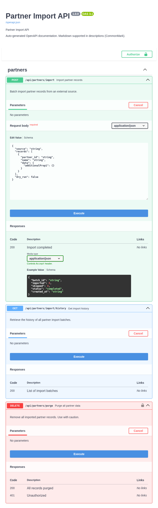

Partner Import Bridge Example¶
This is the bridge example showing how to generate OpenAPI docs from
@validate_http decorators without using @openapi on every handler.
It uses scan_validation_metadata(app), register_openapi_metadata(),
and the OpenAPIOperationMetadata dataclass.
Source: examples/partner_import_bridge/function_app.py
What this example includes¶
| Method | Route | Purpose |
|---|---|---|
POST |
/api/partners/import |
Import partner records |
GET |
/api/partners/import/history |
Get import history |
DELETE |
/api/partners/purge |
Purge all partner data |
GET |
/api/openapi.json |
OpenAPI JSON |
GET |
/api/docs |
Swagger UI |
Features demonstrated¶
scan_validation_metadata(app)— auto-register OpenAPI metadata from@validate_httpregister_openapi_metadata()— programmatic registration for endpointsrequest_modelparameter onregister_openapi_metadata()— proper Pydantic schema conversionOpenAPIOperationMetadatadataclass — structured alternative to keyword argumentsrequest_body_requiredflagsecurityandsecurity_schemevia programmatic registration
When to use the bridge pattern¶
| Approach | Best for |
|---|---|
@openapi decorator |
Full control over OpenAPI metadata per endpoint |
@openapi + @validate_http stacked |
Synchronized docs and validation with shared models |
Bridge (register_openapi_metadata) |
Auto-generate docs from validation decorators, add metadata programmatically |
The bridge pattern is useful when:
- You already have
@validate_httpon all handlers and want docs without adding@openapito each one - You register routes dynamically and need programmatic metadata control
- You want to centralize OpenAPI metadata registration in one place
Data models¶
class PartnerRecord(BaseModel):
partner_id: str = Field(..., description="External partner identifier.")
name: str = Field(..., description="Partner display name.")
data: dict[str, Any] = Field(default_factory=dict, description="Arbitrary partner data.")
class ImportBatchRequest(BaseModel):
source: str = Field(..., description="Import source system identifier.")
records: list[PartnerRecord] = Field(..., min_length=1, description="Records to import.")
dry_run: bool = Field(default=False, description="If true, validate without persisting.")
class ImportBatchResponse(BaseModel):
batch_id: str = Field(..., description="Unique batch identifier.")
imported: int = Field(..., description="Number of records imported.")
skipped: int = Field(default=0, description="Number of records skipped (duplicates).")
status: str = Field(default="completed", description="Batch status.")
created_at: str = Field(..., description="ISO-8601 timestamp.")
How the docs are configured¶
Step 1: Scan for validation metadata¶
Step 2: Register metadata programmatically¶
For endpoints using @validate_http, use request_model to get proper schema conversion:
from azure_functions_openapi import register_openapi_metadata
register_openapi_metadata(
path="/api/partners/import",
method="POST",
summary="Import partner records",
description="Batch import partner records from an external source.",
tags=["partners"],
request_model=ImportBatchRequest,
response_model=ImportBatchResponse,
response={200: {"description": "Import completed"}},
)
Step 3: Use OpenAPIOperationMetadata for structured registration¶
from azure_functions_openapi import OpenAPIOperationMetadata
_bulk_delete_meta = OpenAPIOperationMetadata(
path="/api/partners/purge",
method="DELETE",
summary="Purge all partner data",
description="Remove all imported partner records. Use with caution.",
tags=["partners"],
request_body_required=False,
response={
200: {"description": "All records purged"},
401: {"description": "Unauthorized"},
},
security=[{"ApiKeyAuth": []}],
security_scheme={
"ApiKeyAuth": {
"type": "apiKey",
"in": "header",
"name": "X-API-Key",
}
},
)
register_openapi_metadata(**vars(_bulk_delete_meta))
request_model vs request_body
Use request_model when you have a Pydantic model. It converts $defs/$ref
patterns into proper #/components/schemas/... references. Using raw
model_json_schema() output via request_body can produce invalid OpenAPI 3.0.
The two parameters are mutually exclusive.
Run locally¶
The examples/ directories contain source modules, not standalone Function App projects.
To run locally, copy the example into a project directory with the required host.json:
mkdir -p my-bridge-app
cp examples/partner_import_bridge/function_app.py my-bridge-app/
cat > my-bridge-app/host.json << 'EOF'
{
"version": "2.0",
"extensionBundle": {
"id": "Microsoft.Azure.Functions.ExtensionBundle",
"version": "[4.*, 5.0.0)"
}
}
EOF
cd my-bridge-app
python -m venv .venv
source .venv/bin/activate
pip install azure-functions azure-functions-openapi azure-functions-validation pydantic
func start
Test with curl¶
1) Import partner records¶
curl -X POST "http://localhost:7071/api/partners/import" \
-H "Content-Type: application/json" \
-d '{"source":"crm","records":[{"partner_id":"P001","name":"Acme Corp","data":{"tier":"gold"}}]}'
Expected output:
{"batch_id":"imp_abc123def456","imported":1,"skipped":0,"status":"completed","created_at":"2026-04-12T00:00:00+00:00"}
2) Dry run (validate without persisting)¶
curl -X POST "http://localhost:7071/api/partners/import" \
-H "Content-Type: application/json" \
-d '{"source":"crm","records":[{"partner_id":"P001","name":"Acme Corp"}],"dry_run":true}'
Expected output:
{"batch_id":"imp_abc123def456","imported":1,"skipped":0,"status":"dry_run","created_at":"2026-04-12T00:00:00+00:00"}
3) Get import history¶
4) Purge all records¶
Expected output:
5) Purge without API key¶
Expected status:
Inspect generated spec¶
You should see:
- three operations under
partnerstag ImportBatchRequestandImportBatchResponseas component schemas (not inline$defs)securitySchemes.ApiKeyAuthfor the purge endpointPartnerRecordreferenced withinImportBatchRequest
Open Swagger UI¶
Open http://localhost:7071/api/docs in your browser.
Expected behavior:
- all
partnersoperations grouped under one tag Authorizebutton for API key input- nested
PartnerRecordmodel visible in request body editor

Production takeaways¶
- Use
request_modelinstead of rawmodel_json_schema()for proper schema references scan_validation_metadata(app)picks up@validate_httpmetadata automatically when available- Use
OpenAPIOperationMetadatafor centralized, structured metadata management request_body_required=Falseis useful for endpoints that accept optional request bodies